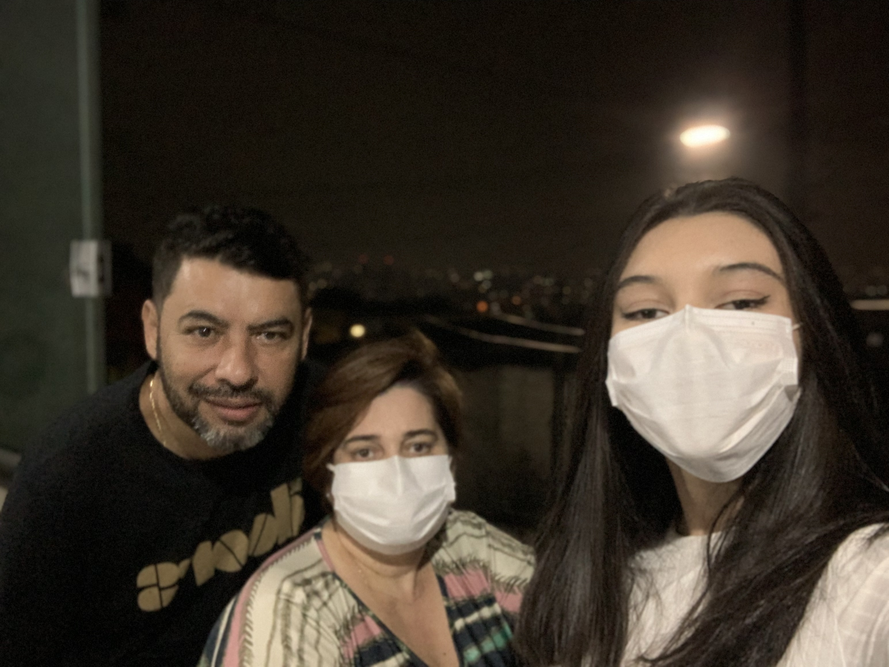
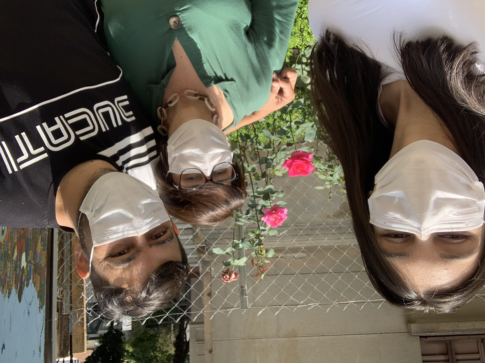
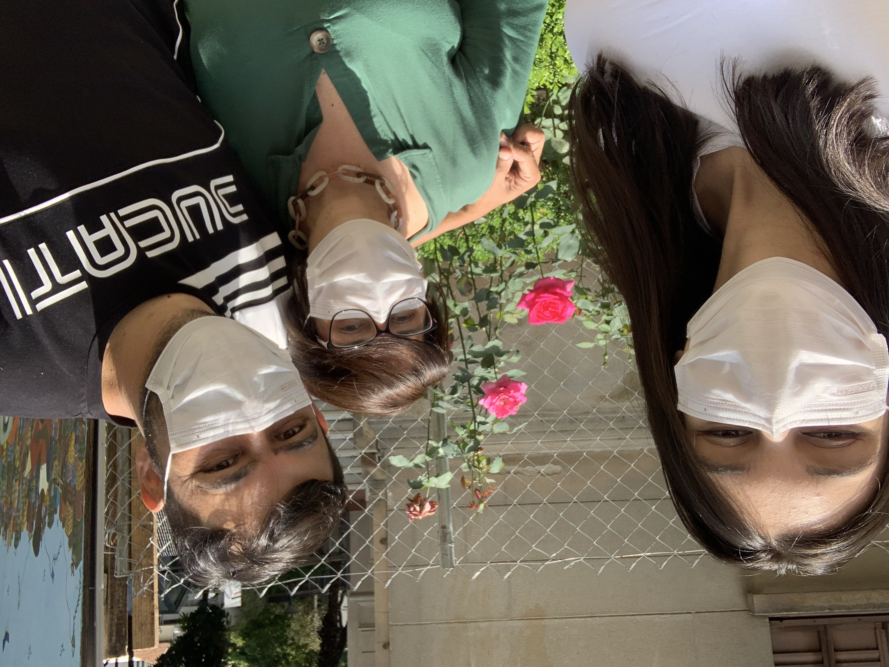

Janeiro
Janeiro foi o mês em que iniciei o ano com entusiasmo e determinação para explorar novas experiências. Com o coração cheio de expectativas, embarquei em uma jornada emocionante, repleta de momentos marcantes e divertidos. Quero compartilhar com vocês alguns dos momentos especiais que vivenciei neste mês inesquecível.
Em janeiro, visitei o restaurante temático da Hello Kitty, acompanhado de meus pais e minha prima. Foi uma experiência ótima, que proporcionou muita diversão. O cardápio era uma verdadeira explosão de criatividade, com pratos cuidadosamente decorados com os traços da Hello Kitty. Cada detalhe era pensado com carinho, desde a apresentação dos pratos até a decoração do ambiente. Enquanto degustávamos as iguarias, tiramos muitas fotos.
Dei início ao meu Janeiro com uma visita à famosa Casa das Rosas. Esse espaço cultural encanta seus visitantes com sua arquitetura deslumbrante e seus belos jardins, que são um verdadeiro refúgio no meio da cidade movimentada. Imerso em um cenário repleto de histórias e poesia, tive a oportunidade de apreciar exposições, eventos e performances. Cada detalhe da Casa das Rosas tornou essa visita memorável, e acredito que momentos assim são essenciais para nutrir nossa criatividade e nossa conexão com a arte.
 
